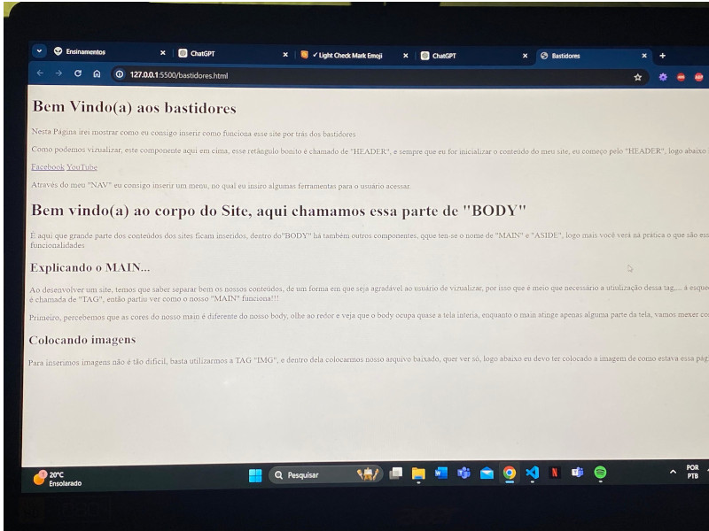

Bem vindo(a) ao corpo do Site, aqui chamamos essa parte de "BODY"
É aqui que grande parte dos conteúdos dos sites ficam inseridos, dentro do"BODY" há também outros componentes, que ten-se o nome de "MAIN" e "ASIDE", logo mais você verá ná prática o que são esses componentes e quais as suas funcionalidades
Explicando o MAIN...
Ao desenvolver um site, temos que saber separar bem os nossos conteúdos, de um forma em que seja agradável ao usuário de vizualizar, por isso que é meio que necessário a utiulização dessa tag,... á esqueci de dizer, cada conteudo desse é chamada de "TAG", então partiu ver como o nosso "MAIN" funciona!!!
Primeiro, percebemos que as cores do nosso main é diferente do nosso body, olhe ao redor e veja que o body ocupa quase a tela interia, enquanto o main atinge apenas alguma parte da tela, vamos mexer com as cores, vem comigo!!!
Colocando imagens
Para inserimos imagens não é tão dificil, basta utilizarmos a TAG "IMG", e dentro dela colocarmos nosso arquivo baixado, quer ver só, logo abaixo eu devo ter colocado a imagem de como estava essa página no começo
Eu também consigo colocar um video atraves da tag "VIDEO